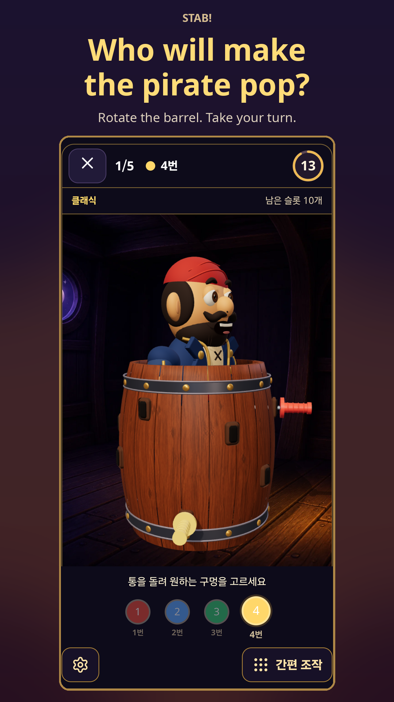
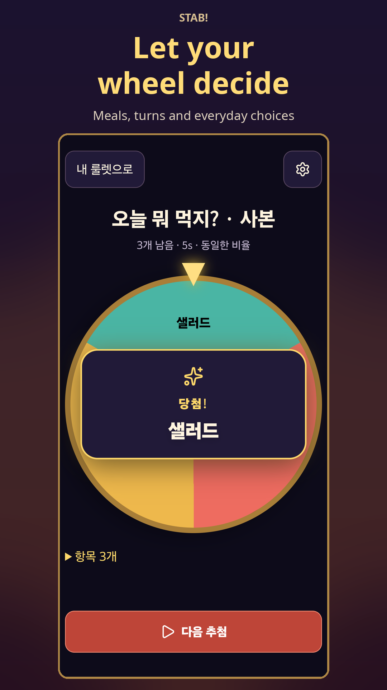
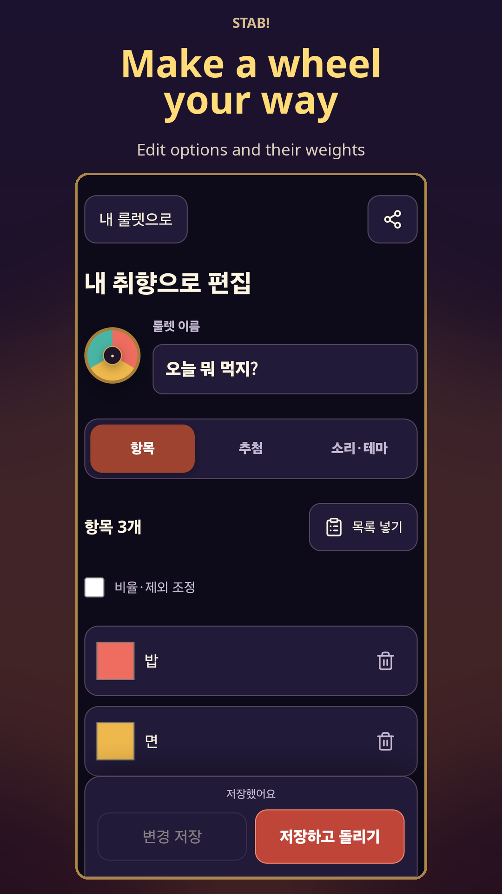

01 / A game with friends
Will this sword make it pop?
Take turns choosing an empty hole in the 3D barrel and inserting a toy sword. Everyone watches as the pirate prepares for a surprise entrance.
Pirate roulette → Choose players → Take turns
One phone. Everyone gets a turn.
STAB! / Pirate roulette + custom wheels
A game for the gathering. A wheel for the little decisions.
Rotate the barrel, take a turn, or add your own choices
and see where the wheel lands.
Android · Ages 13+ · Contains ads


Actual app captures · Korean UI shown
PLAY / PICK / REPEAT
Something to play. Something to choose. One app for both.
01 / A game with friends
Take turns choosing an empty hole in the 3D barrel and inserting a toy sword. Everyone watches as the pirate prepares for a surprise entrance.
Pirate roulette → Choose players → Take turns
02 / What should we eat?
Put in the meals you actually want—noodles, sandwiches or pizza—and let your wheel choose. Save the combination for the next time nobody can decide.
Custom wheel → Add meals → Spin
03 / Who goes first?
Add speaking turns, snack duties or another small choice. Enable winner exclusion to remove each selected option before choosing the next.
Add options → Exclude winners → Pick in order
IN THE APP
These are actual captures from an Android phone. The game UI shown is Korean.

MAKE IT YOURS
Save your own wheels and keep favorites close. Adjust option weights and spin time, or share a result card.
Pirate roulette is a local game played together around one phone, taking turns. It is not an online multiplayer game for remote players.
Yes. Add your own options to a custom wheel. You can adjust their relative weights and exclude each winner from the next spin.
You can adjust music and sound-effect volume, switch off haptics and reduce visual effects. Easy controls also let you pick holes without rotating the barrel.
The Android app contains ads and is designed for ages 13 and above. See the privacy policy below for advertising and data-processing details.
No. You can start without a photo. If you choose to add one, face photos stay in app-private storage; the app does not upload them to a server.
Email support below with the app name, phone model, Android version, app version and a description of the issue. Hide personal details such as photos and names in any screenshot.
READY WHEN YOU ARE
Keep STAB! ready for the next game—or the next little decision.
Get it on Google PlayAndroid · Ages 13+ · Contains ads